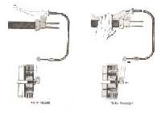
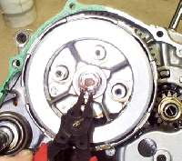
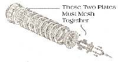
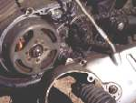
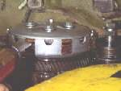
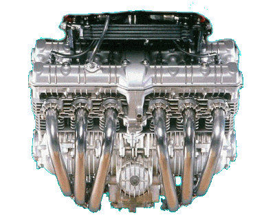

¶ Clutches come in a number of designs, but they all are made to do two things.
 Most of the Japanese bikes have a wet plate clutch. This means the clutch runs in a bath of oil. Repair is really quite simple. Remove the clutch cover, being careful to check for any washers from the kick starter that may stick to the inside of the clutch cover. Then loosen the nuts or bolts that hold and tension the clutch springs. Now remove the the clutch plates. On some clutches you pull the plates and the inner clutch basket as a unit after removing the nut or circlip holding it on.  Measure the thickness of the fiber plates and compare that measurement to the one given in your shop manual. If they are too thin replace them. If you do not have the thickness measurement just look at them. Most times if they are worn out they will LOOK worn out and/or smell burnt. If they smell burnt, replace them. Even if they look and measure good. Turn them on edge, both fiber and steel plates. If they are bent replace them. Look at the inner and outer fingers. If they are damaged or worn, replace them. Look at the clutch basket. Inspect the grooves the clutch plate fingers slide into. Both inner and outer. if they are badly worn, consider replacing the clutch basket.  Take the new fiber plates and soak them in a pan of oil for an hour or two before assembly. If you are reusing the old plates you can just coat them with oil. Make sure that the outer clutch plate that carries the springs meshes right with the clutch basket. On some, they will only go in the right way, but on others the grooves will not line up right and this prevents the springs from pushing the plates together. Some clutches will have arrows that must match. Others won't have anything... you just have to make sure they mesh up right.
Most clutches have the disengagement mechanism in the center of the clutch.   Remember, most engines have a flat metal shim on the kick starter shaft. Lots of times it will stick to the clutch cover when you pull it off. Make sure you put it back on the kick starter.
After everything is finished and the clutch cover back on, don't forget to refill the engine with oil.
Some clutches, like the BMWs, Norton Commandos and some Harleys, have a single (or two) Heavy spring that is held in by a large circlip. These require a special tool to remove.
The BSAs and Triumphs require a special puller to get the clutch basket off.
All clutches must have a bit of free play in the cables and rods so the clutch springs can exert the maximum amount of pressure on the plates. If there is an adjustment screw on the rod, loosen the lock nut and tighten the screw until there is no more free play, then loosen it about 1/8 of a turn and tighten the lock nut. The adjustment screw can be right OR left thread, so watch out. A shop manual would be of help here. The adjusting screw can also be UNDER the clutch cover on the clutch spring plate. After you have made this adjustment, adjust the clutch cable keeping at least a little free play in the cable. Remember, on some bikes, the only adjustment is the free play of the clutch cable. Depending on the bike, the cable can be adjusted on both ends and in the center somewhere, only on both ends or only on one end.
For some exploded clutch views to study click HERE.
Clutches are basically round baskets filled with alternating fiber and steel plates held
Dry plate clutches run dry with no oil. BMWs, some Harley-Davidsons, a few Japanese bikes, and others have dry clutches.


 |
Copyright © 1999-2000 dansmc.com. All rights reserved.